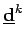

Inhalt Index DeskTop Bronstein

 Optimierung Nichtlineare Optimierung Gradientenverfahren für Probleme mit Ungleichungsrestriktionen Verfahren der zulässigen Richtungen
Optimierung Nichtlineare Optimierung Gradientenverfahren für Probleme mit Ungleichungsrestriktionen Verfahren der zulässigen Richtungen


Eine zulässige Abstiegsrichtung  im Punkt  kann durch Lösung des folgenden Optimierungsproblems gewonnen werden:
kann durch Lösung des folgenden Optimierungsproblems gewonnen werden:
 |
(18.91) |
| (18.93) |
der sogenannten in  -aktiven Restriktionen ersetzt wird. Dadurch werden lokal Abstiegsrichtungen ausgeschlossen, die von
-aktiven Restriktionen ersetzt wird. Dadurch werden lokal Abstiegsrichtungen ausgeschlossen, die von  ausgehend näher an den von -aktiven Restriktionen gebildeten Rand von M heranführen (s. Abbildung).
ausgehend näher an den von -aktiven Restriktionen gebildeten Rand von M heranführen (s. Abbildung).
Ist nach dieser Modifizierung Lösung von (18.92a,b,c), dann ist  nur dann ein stationärer Punkt, wenn erfüllt ist. Anderenfalls ist geeignet zu verkleinern und das Richtungssuchprogramm zu wiederholen (s. 18.6).
nur dann ein stationärer Punkt, wenn erfüllt ist. Anderenfalls ist geeignet zu verkleinern und das Richtungssuchprogramm zu wiederholen (s. 18.6).